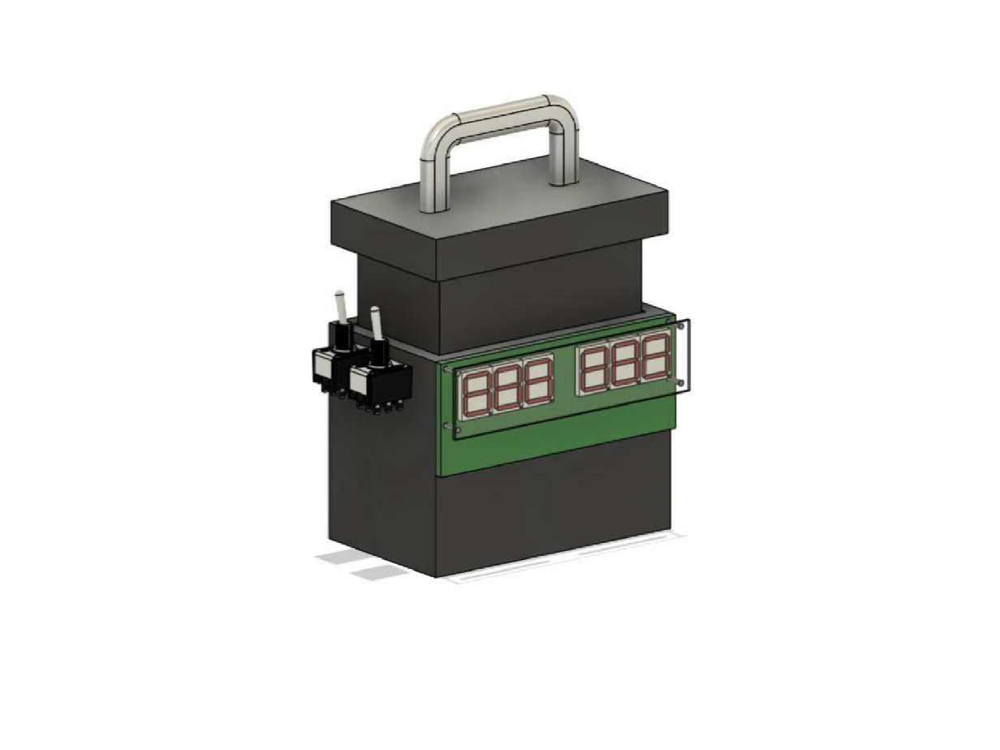
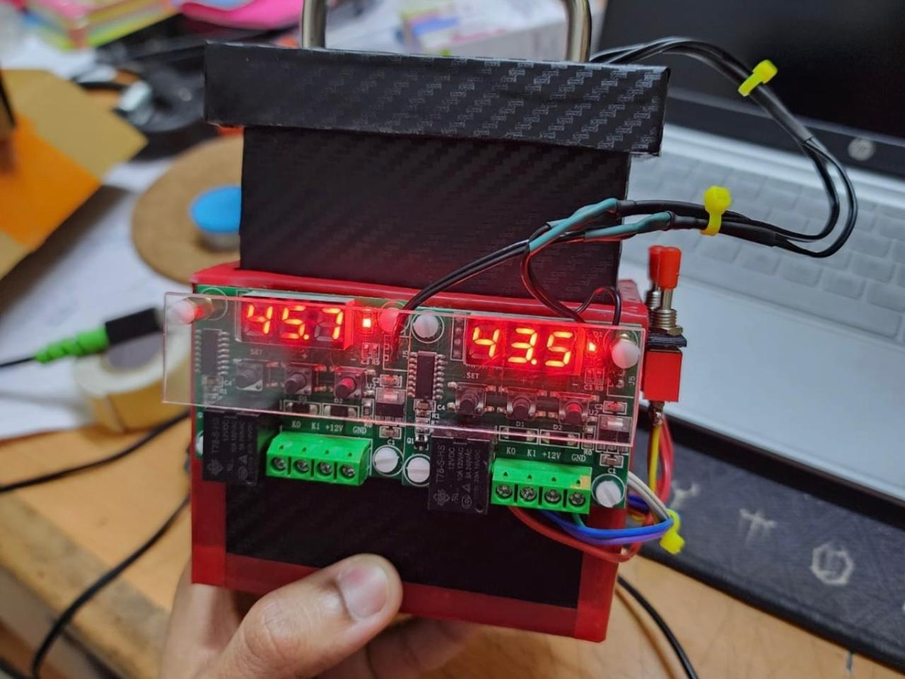

Developed an experimental setup to measure transient thermal response across different materials, integrating data acquisition instrumentation and validating results against theoretical heat transfer models.
This project presents the design, fabrication, and experimental validation of a compact apparatus for measuring transient heat transfer coefficients under simultaneous heating and cooling conditions. A Peltier module serves as the dual-mode thermal actuator, exploiting the Peltier effect to generate a controlled temperature differential across an aluminium interface. K-type thermocouples paired with W1209 digital controllers log temperature-time data at 0.1°C resolution, which is subsequently processed through lumped capacitance analysis to extract convective heat transfer coefficients.
Conventional transient heat transfer laboratory setups — relying on thermometers, boiling water baths, or ice baths — suffer from long preparation times, condensation-induced measurement error on the thermometer tip, and the inability to conduct heating and cooling experiments simultaneously. These limitations introduce systematic inaccuracies and reduce experimental throughput, making them poorly suited for precise thermal characterisation work.
The apparatus was designed around three modular wooden sub-assemblies — a sealed insulated base, a Peltier housing with guiderail-mounted TEC module, and a thermocouple-integrated lid — selected for thermal insulation, structural rigidity, and ease of assembly. Component selection prioritised compactness and signal accuracy, with the W1209 controller enabling closed-loop temperature monitoring. The lumped capacitance assumption (Bi ≤ 0.1) was analytically verified to justify uniform-temperature modelling of the test specimen, and experimental results were cross-validated against theoretical predictions.
The apparatus enables simultaneous transient heating and cooling characterisation in a single experimental run, eliminating the need for separate setups and significantly reducing total experiment time. The guiderail-mounted Peltier module allows tool-free removal for maintenance or module replacement, enhancing repairability. Fully sealed wooden enclosures minimise ambient thermal interference, while the digital thermocouple display provides real-time temperature tracking at 0.1°C resolution — a marked improvement over conventional glass thermometers. Condensation-induced error, a known limitation of ice-bath methods, is entirely eliminated by the enclosed contact-measurement configuration.
The compact form factor imposed constraints on heat sink sizing within the Peltier housing, limiting the maximum achievable temperature differential and extending stabilisation time compared to larger laboratory-grade setups. Sourcing electronics calibrated to the required thermal accuracy within budget and time constraints required iterative component evaluation. Additionally, ensuring adequate sealing of the wooden enclosure to minimise convective heat leakage required careful assembly, as minor gaps introduced measurable drift in baseline thermocouple readings.

